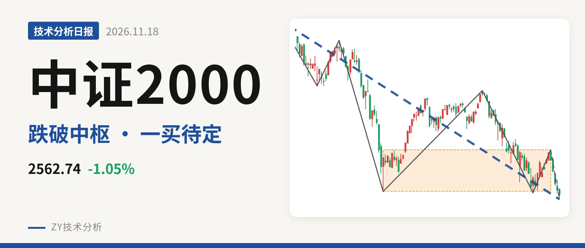
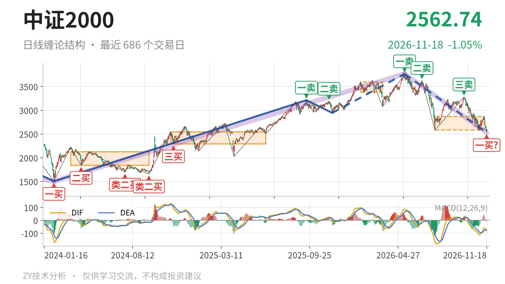
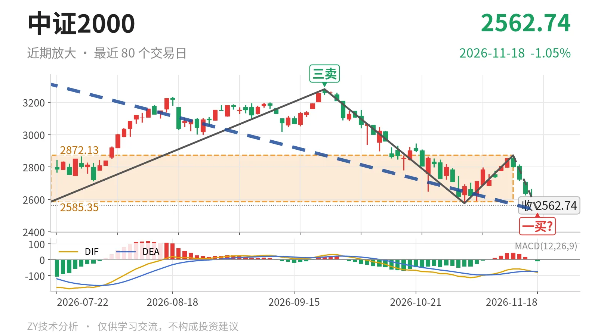

中证2000｜失守2585点，2531点一买待定

最近日线中枢 2585.35—2872.13点，收盘位于中枢之下
一句话：日线跌破2585点中枢下沿，2531点一买暂定，下跌动能减弱。
📉 走势结构：5月14日以来下跌段没有结束
日线仍处在5月14日以来的下跌段中，该段从3768.08点落到2531.10点，跌32.8%，还在延续。更大级别上，2024年2月6日至2026年5月14日的上涨段在3768.08点转跌，当前日线下跌线段仍在延续。这轮下跌已回吐2024年2月6日至2026年5月14日上涨段约五成涨幅，调整幅度较深。日线笔中枢由1月26日至3月23日中枢（3381.36—3593.19点）下移到7月21日至11月12日中枢（2585.35—2872.13点），中枢位置明显降低。

🧭 中枢与位置：收盘仍在最近中枢下沿下方
最新收盘2562.74点，低于最近日线笔中枢下沿2585.35点约0.9%，距离约23点。该中枢尚未完成，但价格已跌破下沿，还没有回到中枢内部。11月2日至11月12日反弹曾触及2872.13点的中枢上沿，随后再度回落，说明中枢内部反抽未成。与1月26日至3月23日中枢相比，中枢从3381点一线下移到2585点一线，日线结构仍是中枢下移。
🔍 买卖点：2531.10点暂定一买
日线笔级别上，11月18日2531.10点暂定为一买，因所在下跌笔从11月12日2872.13点至11月18日尚未走完，低点会随这一笔的延续而变化。若后续跌破2531.10点，该暂定一买被破坏，只能看作更小级别的反弹结构。线段级别上，5月14日至11月18日的下跌线段也出现暂定的类二买，同在2531.10点。此前5月14日一卖3768.08点、6月23日二卖3626.48点、9月22日三卖3280.29点，一个比一个低，下跌结构尚未扭转。

⚖️ 背驰：新低不新弱仍在进行
当前11月12日以来的日线下跌笔与9月22日至11月2日的下跌笔比较，低点2531.10点低于2576.02点，但DIF低点-80.3高于前一笔的-108.5，绿柱面积目前为11，前一笔为873，呈现新低不新弱迹象。只是当前这一笔只有5根K线，仍在延续，绿柱面积与DIF低点都可能继续变化，背驰尚在进行。若后续绿柱面积不继续放大，这个日线回落段才具备背驰结构。
🔑 关键位置观察：2585点反抽定强弱
最近日线笔中枢下沿2585.35点转为反抽观察位。反抽若回不到2585点上方，结构上构成三卖，5月14日以来的下跌段还将延续；重新站上2585点，则更可能只是中枢扩展，至少回到中枢内震荡。上方2872点附近为中枢上沿，未站上之前下移结构不改。整体看日线结构仍偏弱，弱在收盘仍低于2585点中枢下沿且卖点一个比一个低；但日线笔出现新低不新弱，下行动能阶段性减弱，暂定一买能否成立看2531点是否会再被跌破。
⚠️ 本文为基于公开行情数据的缠论技术结构记录，由程序自动计算并生成，仅供学习交流，不构成任何投资建议。市场有风险，投资需谨慎。